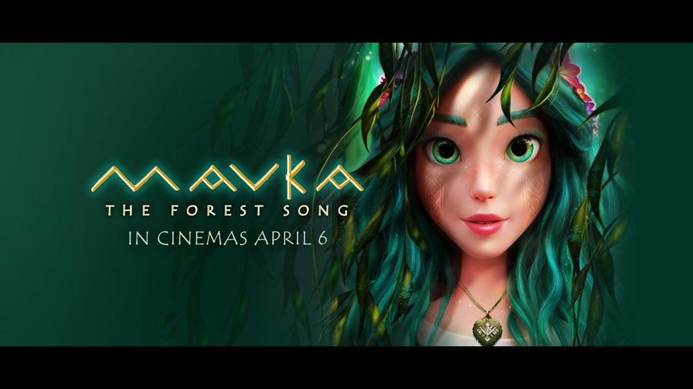

Best Cartoons 2023
Detective Conan: Black Iron Submarine

Many engineers from around the world gather at the Interpol marine facility "Pacific Buoy" on Hachijo-jima, in the off sea south of central Tokyo Prefecture coast, to witness the launch of a new system that connects all law enforcement camera systems around the world and enables facial recognition worldwide. Conan, along with his friends Kogoro, Ran, Agasa, Haibara, and the Detective Boys, also heads on the island with an invitation from Sonoko to see the whales. He receives a message from Subaru, who says that an Europol agent has been murdered in Germany by Gin. Perturbed, Conan sneaks onto the police ship led by Kuroda, which is bringing them to the island to protect the completion work, and tours the new facility, just in time for the Black Organization to kidnap a female engineer, seeking a piece of important data in her USB drive. A terrifying howl of screws is heard from the ocean, as an unknown person approaches Haibara.
Mavka: The Forest Song
Mavka - a soul of the Forest - faces an impossible choice between love and her duty as guardian to the Heart of the Forest, when she falls in love with a human - the talented young musician Lukash. Our story is about the magical power of love. That kind of love that enables human nature to find the magic within and reveals abilities and qualities that empower a person to reach beyond possible and to hold against evil and human vice.
Deep Sea

Deep Sea (Chinese: 深海; pinyin: Shēn Hǎi) is a 2023 Chinese 3D animated fantasy film, written and directed by Tian Xiaopeng,[4] who previously directed Monkey King: Hero Is Back.[5] The film was released in China on 22 January 2023 (Chinese New Year).